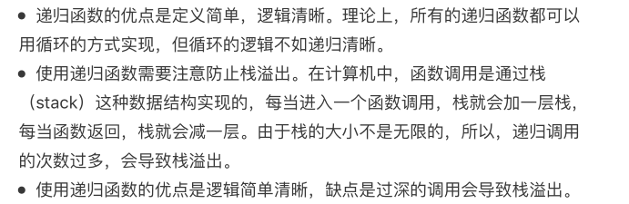

支持可变长参数列表的函数可以支持任意个传入参数，比如fmt.Println函数就是一个支持可变长参数列表的函数。
package main
import "fmt"
func main() {
fmt.Println(add())
fmt.Println(add(1, 2, 3, 4, 5, 6))
//使用切片作为参数
arr := []int{1, 2, 3, 4, 5, 6}
fmt.Println(add(arr...))
}
//可变参数的 函数
func add(arr ...int) (result int) {
fmt.Printf("arr->type= %T \n", arr)
for _, value := range arr {
result += value
}
return result
}注意事项：
当一个函数在其函数体内调用自身时，则称之为递归，递归函数对于解决数学上的问题是非常有用的，比如计算阶乘，生成斐波那契数列等。
构成递归需具备的条件：
package main
import "fmt"
func main() {
//使用切片作为参数
fmt.Println(factorial(10))
}
//可变参数的 函数
func factorial(num int) int {
if num <= 0 {
return 1
}
return num * factorial(num-1)
}